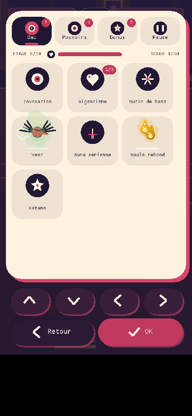
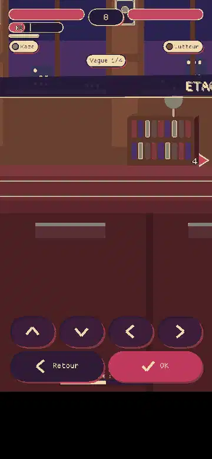
01 Pause : onglet Sac
Tous les objets en grosses tuiles (icone, nom court, niveau n/max). Haut / bas defilent ligne par ligne, gauche / droite changent d'onglet, on peut aussi toucher un onglet.
Avant : un paragraphe de texte (« Objets : Invocation, Gigantisme, Arme de boss, Zoom... »).

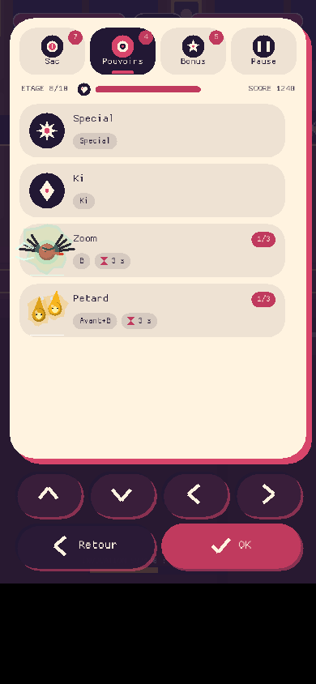
02 Pause : onglet Pouvoirs
Les commandes gagnees avec leur touche (puce), chaque daemon avec sa touche, son sablier de recharge et ses etoiles de lien, puis les synergies actives (+x %).
Avant : une ligne « Commandes gagnees : A = Special ... ». Maintenant : une ligne par pouvoir, lisible d'un coup d'oeil.

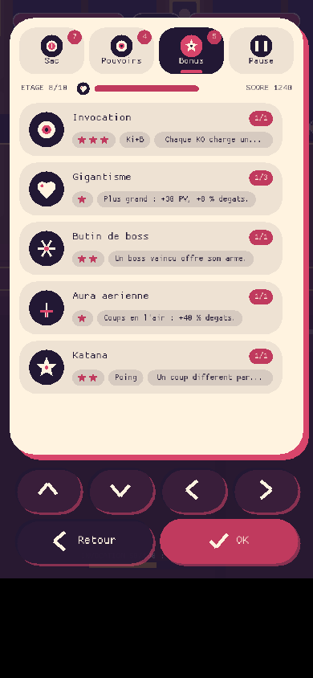
03 Pause : onglet Bonus
Les objets passifs : icone, nom, niveau n/max, etoiles de puissance, effet en une phrase.
Les niveaux n/max etaient invisibles dans la pause.
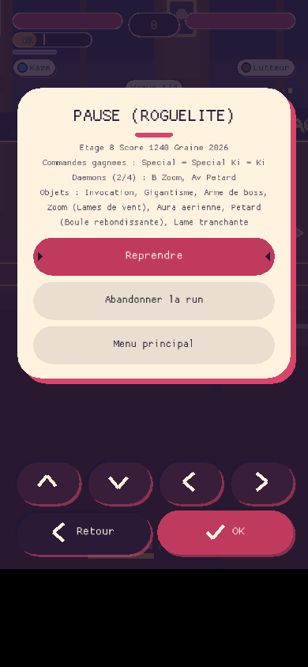
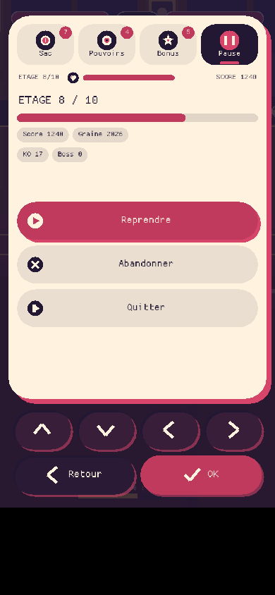
04 Pause : onglet Pause
Progression (etage n / 10, barre, score, graine, KO, boss) et trois gros boutons : Reprendre (accent), Abandonner, Quitter.
Le mot « Menu principal » devient « Quitter » ; la progression est sauvegardee comme avant.
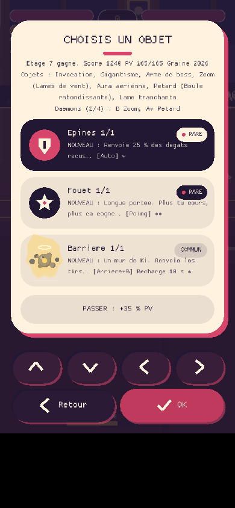
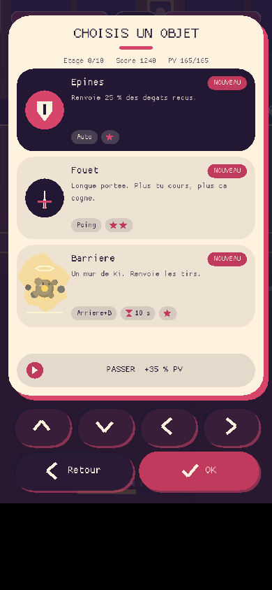
05 Cartes de choix (portrait)
Grande icone ou portrait du daemon, badge NOUVEAU / AMELIORE n/max, nom court, une phrase, puces : touche, sablier de recharge, etoiles. Selectionne un daemon : son caractere s'affiche en infobulle en haut. « Passer » est un vrai bouton visible au-dessus de la barre d'actions.
Avant : « Passer : +35 % PV » etait une pilule qui pouvait chevaucher les fleches rondes en portrait.
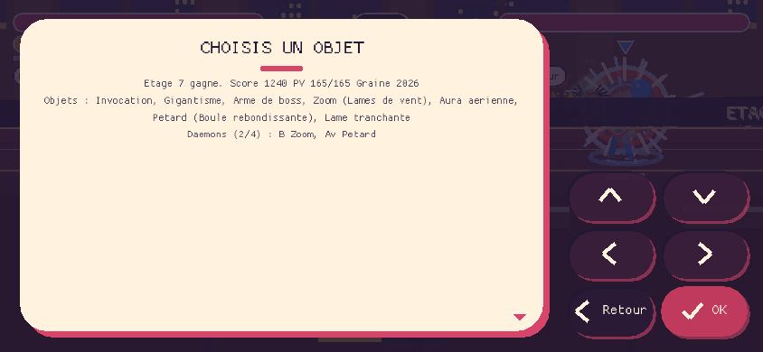
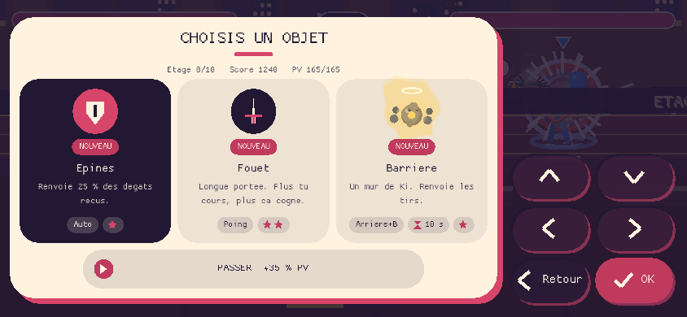
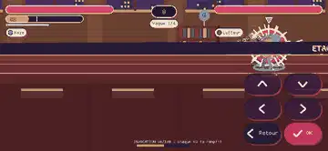
06 Cartes de choix (paysage)
Trois colonnes : icone, badge, nom, phrase, puces collees en bas. « Passer » sous les cartes, la barre d'actions reste a droite, sans recouvrement.
Meme grammaire que le portrait.
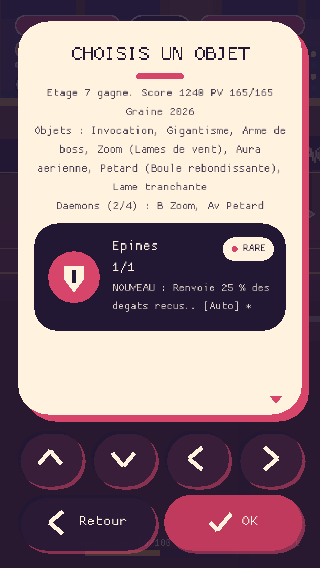
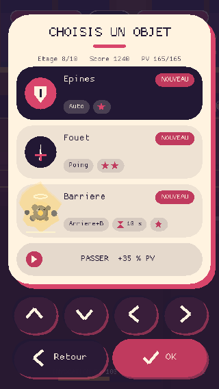
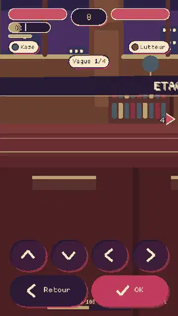
07 Telephone 320 x 568
Le plus petit ecran de l'audit : la phrase d'effet saute si la place manque, les puces (touche, sablier, etoiles) restent.
Teste sur les 14 tailles : aucun texte au-dela de sa limite, aucun chevauchement avec la barre.